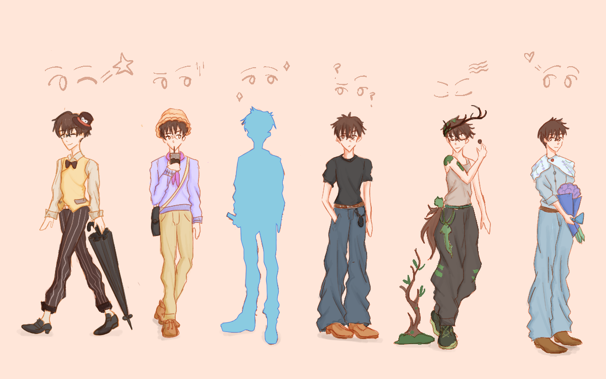
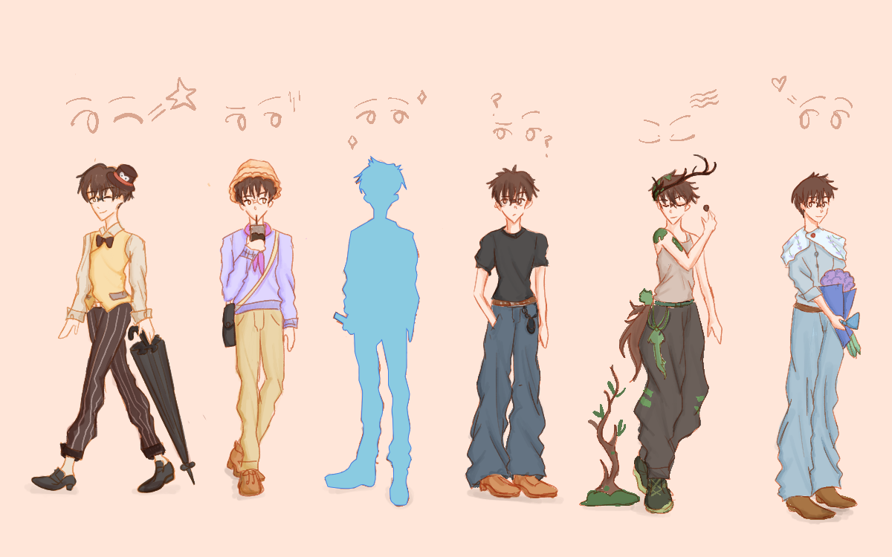
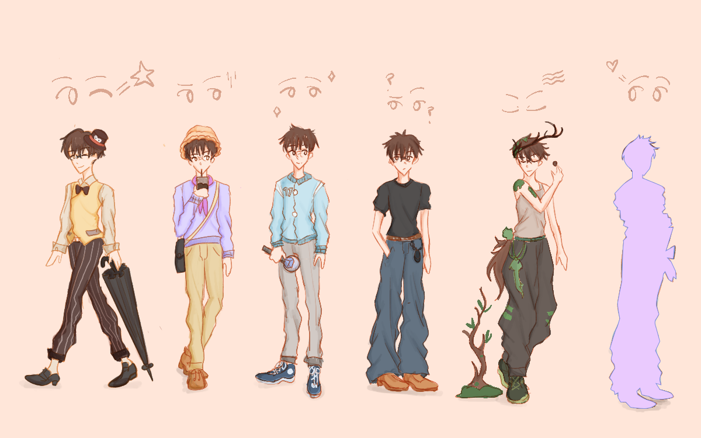
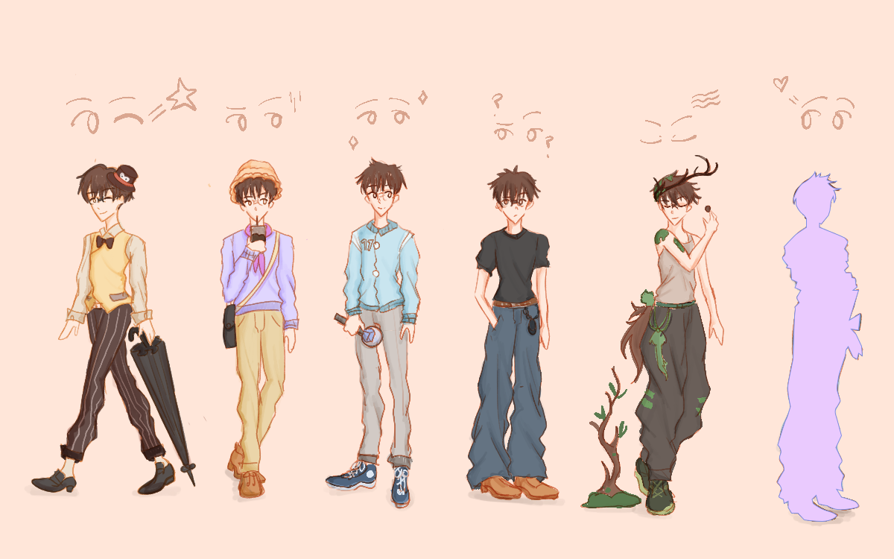

 

This is a picture of one of my figures that I collect. It's called Dimoo and it's part of the Animal Kingdom Collection. I specifically chose the penguin figure because it reveals my favorite animal, penguins! I find penguins to be super adorable!
I further chose the penguin because I love the outfit. I love the hat, bowtie, honestly..the entire outfit is super classy. And the figure looks to be dancing with the penguin as well. How adorable is that?! The colors also remind me of coffee shops, which I also love just as much!